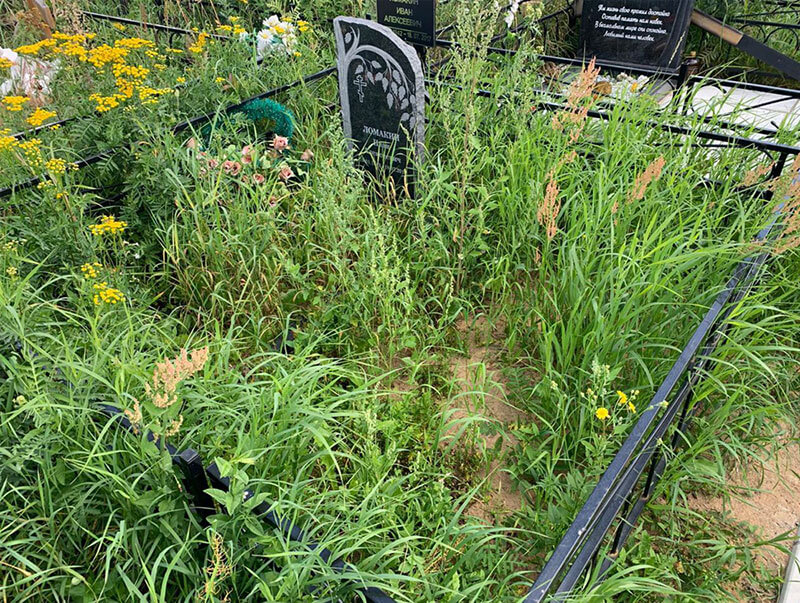
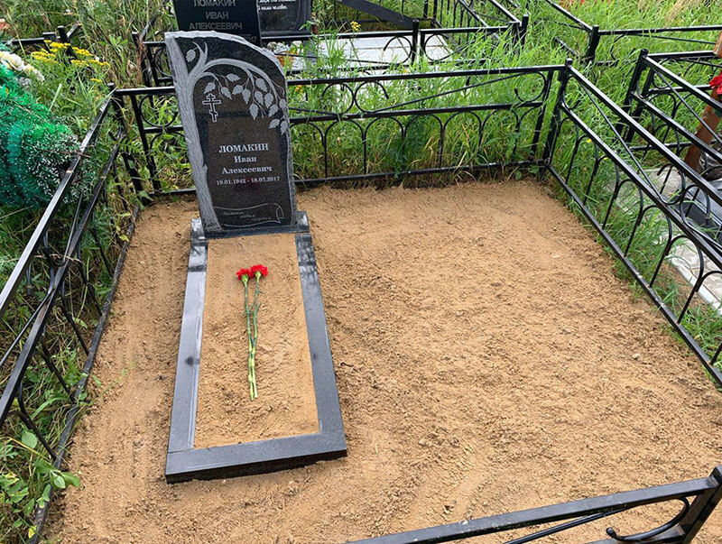
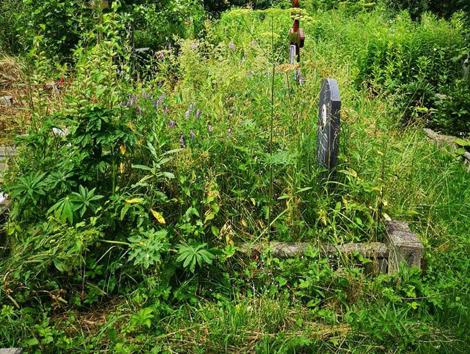
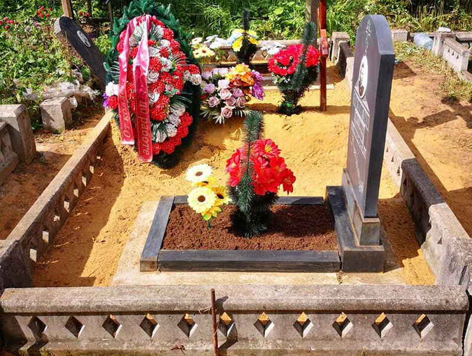

Почему стоит заказывать уход за могилами
Одни люди посещают могилы близких 1 - 2 раза в месяц, у других нет возможности для регулярных посещений – они приезжают с периодичностью не чаще раза в год. В любом случае, при посещении кладбища перед ними предстает просто огромный масштаб загрязнений – на ограде полопалась краска, надгробие покрыто большим слоем пыли, а всюду валяются пожелтевшие листья, увядшие цветки, остатки венков после чьих-то похорон. Виной тому могут быть как природные явления, так и недобросовестные люди, которые раскидывают мусор.
Родственники не всегда в состоянии самостоятельно следить за могилками, поэтому единственный выход из такой ситуации – это заказать уборку могил, гранитных памятников на кладбище с разовым обслуживанием или постоянным — по графику. Обращение к помощи специализированных компаний имеет множество преимуществ:
- Экономия времени – нет необходимости каждый раз выделять целый день, чтобы поехать на некрополи ко всем умершим родственникам и навести порядок.
- Высокое качество – наши сотрудники знают свое дело и гарантируют чистоту и порядок. Уход за захоронениями осуществляется бережно и профессионально. Сотрудники службы приедут на любое кладбище вне зависимости от его расположения. Им под силу очистить мраморную плиту без царапин, гранитную плитку, убрать сорняки, не повредив газон, отмыть гранитный памятник.
Заказ обслуживания обойдется недорого. Клиенты могут связаться с менеджерами, чтобы уточнить, сколько будет стоить услуга. Родственники могут быть уверены, что в их отсутствие в месте упокоения близкого своевременно проводится ритуал по благоустройству могилы. Мы предлагаем качественный сервис, который поможет вам поддерживать участок в аккуратном и ухоженном состоянии.
Кто выполняет уход
За состоянием кладбища обычно следит его администрация. Она отвечает за уборку подконтрольной территории, контролирует своевременное предоставление мусорных контейнеров, доступ воды, вывоз мусора, размещение могил. Однако уборка конкретной могилы осуществляется родственниками усопшего. Хорошей идеей при отсутствии времени на уборку может стать обращение в нашу организацию "Тимуровцы", где готовы ухаживать за могилой за определенную плату.
Оформление заказа возможно несколькими способами:
- по телефону;
- через Интернет,Ватсап;
- путем личной встречи.
Что входит в уборку могил
Доверить уборку захоронения похоронным компаниям – это не пренебрежение памятью близкого, а вынужденная мера. Бизнес, дети, семейная жизнь, проживание в другом районе и даже городе – все это не позволяет родным уделять время уходу за могильным участком. Клиринговые услуги выполняются комплексно, поэтому при их заказе можно рассчитывать на красивый и чистый участок, который будет всегда находиться в идеальном состоянии. В зависимости от пожеланий заказчиков обслуживание может включать:
- Сбор мусора и пыли – листвы, фантиков, увядших цветов (зимой – снега).
- Обработка земли – удаление травы, сорняков, рыхление грунта.
- Озеленение – посадка деревьев, декоративных кустарников, цветов.
- Обновление оградки – покраска.
- Вывоз мусора в специально отведенные для этого места.
- Выравнивание контура могилы, поднятие земли.
- Влажная уборка – мытье крестов, памятников, надгробий, склепов, постаментов, плитки, столов и скамеек.


При необходимости специалисты могут оказывать дополнительные услуги по запросу родных. К примеру, можно оформить периодическое возложение цветов или венков к памятнику, поливать растения.
Посадки на могиле
Озеленение могильного участка – это отдельная опция, которая предусматривает посадку растений с учетом времени захоронения и сезона. Для высаживания на кладбище подходят далеко не все цветы и деревья. Как правило, подбираются только неприхотливые растения, которые не требуют высокого качества грунта и спокойно переносят атмосферные осадки. Они должны быть не слишком высокими, устойчивыми к вредителям и заболеваниям.
Если похороны прошли недавно, и памятник еще не поставлен, целесообразно выбирать однолетние цветы и травы. В случае, когда памятник уже установлен, можно отдать предпочтение многолетникам. Деревья на участке высаживаются с соблюдением расстояния не менее 5 метров от могилы. Лучше выбирать для посадки ель, осину, березу. Если планируется посадить большемерные деревья, этот вопрос необходимо обговорить с администрацией кладбища.


Уход за оградой
Металическая оградка со временем будет ржаветь, наши специалисты удалят старую краску, зачистят металл от ржавчины, покроют грунтовочным материалом и выполнят свежее окрашивание. Стоимость будет зависеть от размера ограды и сложности ее конструкции (фигурные ограждения оговариваются отдельно).
Услуги по уборке могил от бюро «Тимуровцы»
Если вам нужна профессиональная и качественная уборка захоронений, команда «Тимуровцы» готова выполнить любой запрос. Наши сотрудники выполняют все на совесть, чтобы участок умершего родственника сиял чистотой. Мы предоставляем обслуживание «под ключ» по оговоренному графику. Вам достаточно обратиться к нам один раз, а остальные заботы мы берем на себя.
Всегда предоставляется фотоотчет, который позволяет заказчику наглядно оценить ее качество.
Чтобы выполнить уборку могилы, обращайтесь к нам по телефону или закажите обратный звонок. Мы моментально примем заявку и поможем облагородить место упокоения близкого человека.